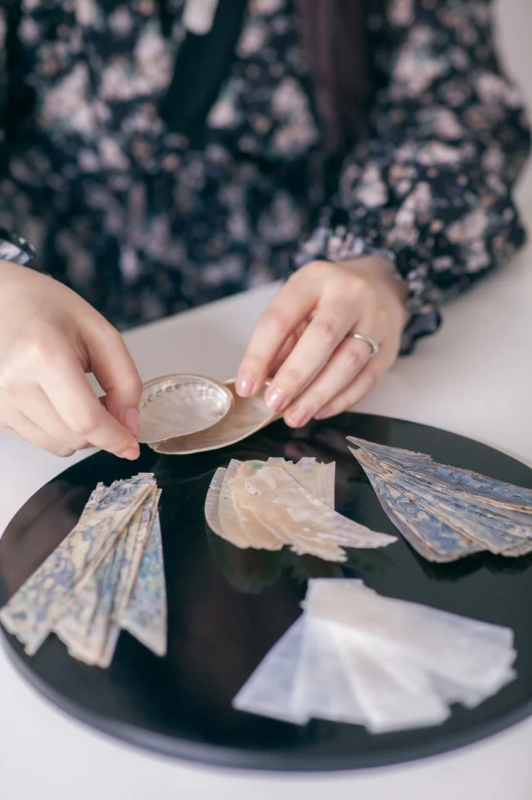

신해달
나전칠기 아티스트
SHIN HAEDAL
독해하고, 해석하고, 번역하는 것.
저는 법을 읽고 의미를 찾아, 그것을 나전칠기의 언어로 옮깁니다.
오랫동안 법을 공부하고 가르치며 텍스트의 의미를 읽고 해석해왔습니다.
우연히 마주한 옻칠의 느리고 정직한 공정에 마음을 빼앗겼고, 텍스트 속에 살던 시간은 버려지는 대신 손의 시간과 하나로 이어졌습니다.
예전에는 법을 논문과 강의로 설명했다면, 지금은 옻칠과 자개로 이야기합니다.
나전칠기 아티스트
SHIN HAEDAL
독해하고, 해석하고, 번역하는 것.
저는 법을 읽고 의미를 찾아, 그것을 나전칠기의 언어로 옮깁니다.
오랫동안 법을 공부하고 가르치며 텍스트의 의미를 읽고 해석해왔습니다.
우연히 마주한 옻칠의 느리고 정직한 공정에 마음을 빼앗겼고, 텍스트 속에 살던 시간은 버려지는 대신 손의 시간과 하나로 이어졌습니다.
예전에는 법을 논문과 강의로 설명했다면, 지금은 옻칠과 자개로 이야기합니다.
쉽게 들어와서 오래 머무는 작업.
순서가 다를 뿐, 깊이는 같습니다.
제 작업은 법과 사회의 규범 안에서 살아가는 개인에 대한 이야기입니다.
저에게 법은 차갑고 어려운 규칙에 머무는 것이 아니라, 결국 사람을 위해 사람들이 만든 규칙입니다. 그리고 그 안을 살아가는 개인은 저마다 다른 모습과 빛깔을 지닙니다.
그래서 작업은 이미지보다 먼저 법학적 개념과 텍스트에서 시작합니다.
개념을 고르고, 제목과 서사를 먼저 씁니다.
그 이야기를 하나의 장면으로 구상한 뒤, 나전칠기의 시각언어로 번역합니다.
법학적 개념 → 제목과 서사 → 시각화.
논문을 쓰던 사고의 구조가 자연스럽게 작업의 구조로 이어진 셈입니다.
천연자개는 같은 조각도 빛과 바라보는 각도에 따라 다른 색을 보여줍니다. 작게 자르고 쪼개어도 고유의 영롱한 빛은 사라지지 않습니다.
저는 그 모습에서 사회의 규범 안에서도 저마다의 빛깔로 살아가는 개인을 떠올립니다.
옻칠은 여러 번 칠하고 말리고 갈아내며 깊이를 만듭니다. 옻칠의 깊이는 자개의 빛을돋보이게 하고, 자개의 영롱함은 다시 옻칠의 깊이를 드러냅니다.
그리고 그 이야기에는 현대인의 일상과 저의 페르소나인 '얼빵해달'이 함께 살아갑니다.어렵게 느껴질 수 있는 법도 얼빵해달의 이야기를 통하면 조금 더 친근하고 다정하게다가갈 수 있다고 생각합니다.
처음부터 어렵게 이해할 필요는 없습니다.
얼빵해달이 귀여워서,
자개가 반짝여서 작품 앞에 멈춰 서도 좋습니다.
그 다음 제목을 읽고, 그 안에 법과 전통의 이야기가 있다는 것을 발견하고, 조금 더 오래바라보게 되기를 바랍니다.
그리고 작품을 떠날 때에는
사회 속의 자기 자신을 한 번쯤 다정하게 바라볼 수 있었으면 합니다.

불러오는 중…